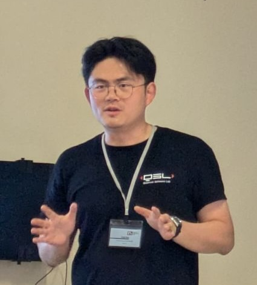

|
Jinge Bao
|
 |
Jinge Bao
Senior Researcher
|
About
I am a Senior Researcher at the School of Informatics, University of Edinburgh. I obtained my Ph.D. in Computer Science from the
National University of Singapore, where I was affiliated with the Centre for Quantum Technologies (CQT).
Research Interests
News
2026-09: New paper: “Optimal Tolerant Testing of Lindbladian Dissipation”.
2026-09: New paper: “Optimal Quantum Junta Testing without Inverse Queries”.
2026-08: New paper: “Towards Optimal Quantum Estimators for State Frame Potential”.
Contact
Room 3.05, Informatics Forum, 10 Crichton Street
School of Informatics, University of Edinburgh
Edinburgh, EH8 9AB, United Kingdom
Email: jinge.bao (at) ed.ac.uk / jingebao1011 (at) gmail.com
|